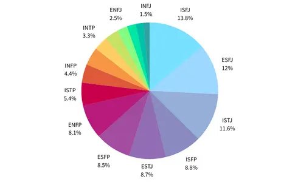

<!DOCTYPE html>
<html>
<head>
	<meta charset="utf-8">
	<meta name="viewport" content="width=device-width, initial-scale=1">
	<title>chart</title>
</head></html>
<style>
	table { border-collapse: collapse; }
table, td, th { border: 1px solid black; }
img{ float:right; }
#content{font-family: cursive;}
	#title{font-family: cursive;}
	table{
margin-left:auto; 
margin-right:auto;
}
h1{text-align:center;}
</style>
<div style="width:100px;float:right;height:800px;background-color:#ffffff;padding:1em;">
</div>
<li><a href="midterm.html">HOME</a></li>
<div id="content">

<h1>16型人格統計表</h1>

<table class="table table-striped">
	<thead>
		<tr>
			<th scope="col">排名</th>
			<th scope="col">MBTI 16型人格</th>
			<th scope="col">比例(%)</th>
		</tr>
	</thead>
	<tbody>
		<tr>
			<th scope="row">1</th>
			<td>ISFJ 守衛者</td>
			<td>13.8%</td>
		</tr>
		<tr>
			<th scope="row">2</th>
			<td>ESFJ 執政官</td>
			<td>12%</td>
		</tr>
		<tr>
			<th scope="row">3</th>
			<td>ISTJ 物流師</td>
			<td>11.6%</td>
		</tr>
		<tr>
			<th scope="row">4</th>
			<td>ISFP 探險家</td>
			<td>8.8%</td>
		</tr>
		<tr>
			<th scope="row">5</th>
			<td>ESTJ 總經理</td>
			<td>8.7%</td>
		</tr>
		<tr>
			<th scope="row">6</th>
			<td>ESFP 表演者</td>
			<td>8.5%</td>
		</tr>
		<tr>
			<th scope="row">7</th>
			<td>ENFP 競選者</td>
			<td>8.1%</td>
		</tr>
		<tr>
			<th scope="row">8</th>
			<td>ISTP 鑑賞家</td>
			<td>5.4%</td>
		</tr>
		<tr>
			<th scope="row">9</th>
			<td>INFP 調停者</td>
			<td>4.4%</td>
		</tr>
		<tr>
			<th scope="row">10</th>
			<td>ESTP 企業家</td>
			<td>4.3%</td>
		</tr>
		<tr>
			<th scope="row">11</th>
			<td>INTP 邏輯學家</td>
			<td>3.3%</td>
		</tr>
		<tr>
			<th scope="row">12</th>
			<td>ENTP 辯論家</td>
			<td>3.2%</td>
		</tr>
		<tr>
			<th scope="row">13</th>
			<td>ENFJ 主人公</td>
			<td>2.5%</td>
		</tr>
		<tr>
			<th scope="row">14</th>
			<td>INTJ 建築師</td>
			<td>2.1%</td>
		</tr>
		<tr>
			<th scope="row">15</th>
			<td>ENTJ 指揮官</td>
			<td>1.8%</td>
		</tr>
			<th scope="row">16</th>
			<td>IINFJ 提倡者</td>
			<td>1.5%</td>
	</tbody>
</table>
</div>
